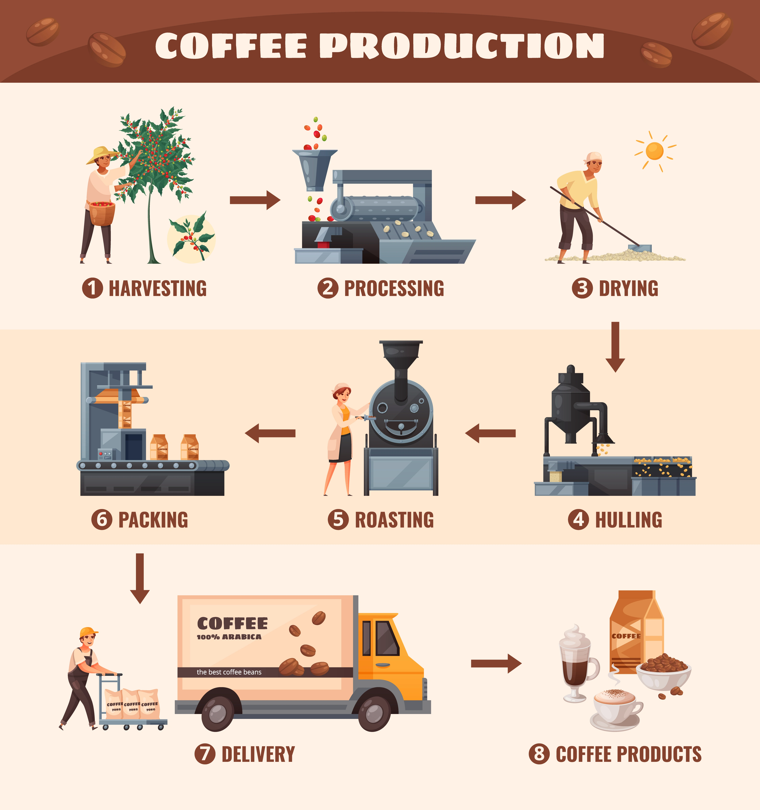
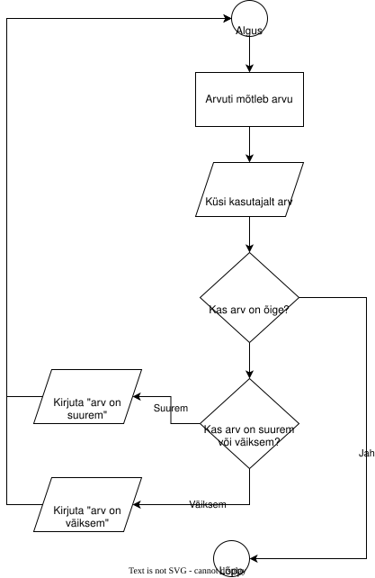

Programmid koosnevad käskudest, mida arvuti täidab. Nendest käskudest moodustub algoritm ehk järjestatud sammude rivi, mis on vajalik mingi tegevuse tegemiseks või eesmärgi saavutamiseks.
Eesti Keele Instituudi Sõnaveeb defineerib algoritmi selliselt:
!!! Note Algoritm - sammsammuline tegevusjuhis, eeskiri mingi tegevuse sooritamiseks või mingit kindlat tüüpi ülesannete lahendamiseks
Kui me teeme midagi keerukamat või mahukamat, siis on see tegemine mõttekas tükeldada jõukohasteks ja hoomatavateks sammudeks. Kindlasti peame lisaks mõtlema sellele, et millistel tingimustel me mingeid samme teeme ja oluliseks osutub enamasti ka sammude järjekord.
Vaatame nüüd kuidas algoritme esitada.
Lihtsa näitena võime mõelda näiteks argipäeva hommikule ning esitada selle järjestikuste sammudena, moodustades hommiku jaoks algoritmi:
Algoritme saab esitada ka jooniste ja infograafikute kujul. Kui olete sõitnud lennukiga, siis oled kindlasti näinud ohutusjuhendeid eesmise istme taskus. Järgneval joonisel on toodud kohvi tootmise protsess.

Vaatame plokkskeemina algoritmi, kus arvuti mõtleb välja suvalise arvu vahemikus 1 kuni 10 ning mängija peab selle ära arvama. Pärast iga pakkumist ütleb arvuti, kas pakutu oli liiga väike või liiga suur. Mäng kestab, kuni mängija arvu ära arvab.
